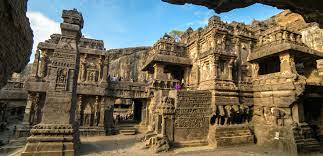
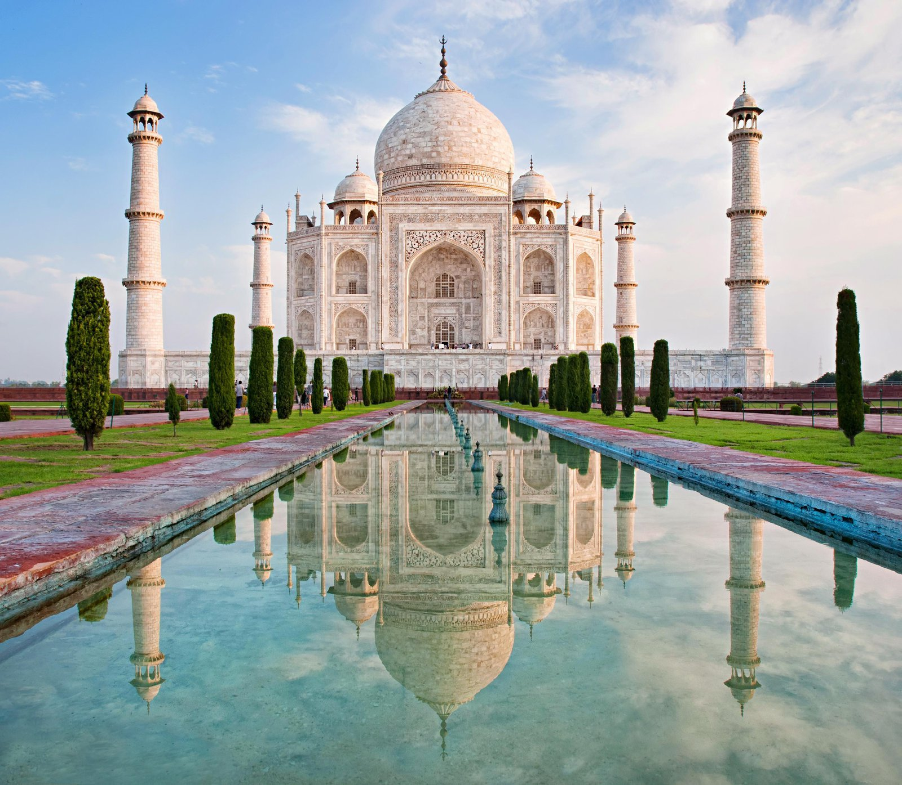
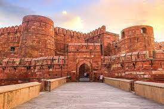
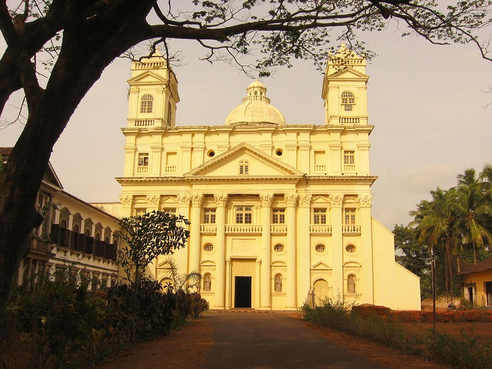
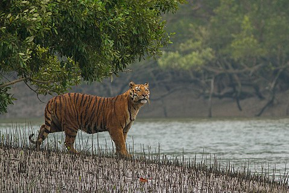

Heritage Sites
The United Nations Educational, Scientific and Cultural Organization (UNESCO) World Heritage Sites are the important places of cultural or natural heritage as described in the UNESCO World Heritage Convention, established in 1945.
The first sites to be inscripted were Ajanta Caves, Ellora Caves, Agra Fort, and Taj Mahal, of which all were inscribed in the 1983 session of the World Heritage Committee. The latest site to be inscribed is Dholavira, Gujarat in 2021. As of July 2021, 19 of the 36 States and union territories of India are home to the World Heritage Sites, with Maharashtra having highest number of sites .
At present, there are 40 World Heritage Sites located in India. Out of these, 32 are cultural, 7 are natural, and 1 is mixed (meeting both cultural and natural criteria), as determined by the organization's selection criteria. India has the sixth largest number of sites in the world.
| Name | Image | Description |
|---|
| Ajanta Caves |  | The Ajanta Caves are approximately 30 rock-cut Buddhist cave monuments dating from the 2nd century BCE to about 480 CE in the Aurangabad district of Maharashtra state in India.[1][note 1] The caves include paintings and rock-cut sculptures described as among the finest surviving examples of ancient Indian art, particularly expressive paintings that present emotions through gesture, pose and form.
They are universally regarded as masterpieces of Buddhist religious art. The caves were built in two phases, the first starting around the 2nd century BCE and the second occurring from 400 to 650 CE, according to older accounts, or in a brief period of 460–480 CE according to later scholarship.[6] The site is a protected monument in the care of the Archaeological Survey of India, and since 1983, the Ajanta Caves have been a UNESCO World Heritage Site. |
|---|
| Taj Mahal |  | The Taj Mahal 'Crown of the Palace', [taːdʒ ˈmɛːɦ(ə)l]),[5] is an ivory-white marble mausoleum on the right bank of the river Yamuna in the Indian city of Agra. It was commissioned in 1632 by the Mughal emperor Shah Jahan (r. 1628–1658) to house the tomb of his favourite wife, Mumtaz Mahal; it also houses the tomb of Shah Jahan himself. The tomb is the centrepiece of a 17-hectare (42-acre) complex, which includes a mosque and a guest house, and is set in formal gardens bounded on three sides by a crenellated wall. |
|---|
| Agra Fort |  | Agra Fort is a historical fort in the city of Agra in India. It was the main residence of the emperors of the Mughal Dynasty until 1638, when the capital was shifted from Agra to Delhi. Before capture by the British, the last Indian rulers to have occupied it were the Marathas. In 1983, the Agra fort was life inscribed as a UNESCO World Heritage Site.[1] It is about 2.5 km northwest of its more famous sister monument, the Taj Mahal. The fort can be more accurately described as the walled city.
Like the rest of Agra, the history of Agra Fort prior to Mahmud Ghaznavi's invasion is unclear. However, in the 15th century, the Chauhan Rajputs occupied it. Soon after, Agra assumed the status of capital when Sikandar Lodi (A.D. 1487–1517) shifted his capital from Delhi and constructed a few buildings in the pre-existing Fort at Agra. After the first battle of Panipat (A.D. 1526) Mughals captured the fort and ruled from it. In A.D. 1530, Humayun was crowned in it. The Fort got its present appearance during the reign of Akbar (A.D. 1556–1605). |
|---|
| Kazirang National Park |
 | Kaziranga National Park is a national park in the Golaghat, Karbi Anglong and Nagaon districts of the state of Assam, India. The sanctuary, which hosts two-thirds of the world's great one-horned rhinoceroses, is a World Heritage Site.[2] According to the census held in March 2018 which was jointly conducted by the Forest Department of the Government of Assam and some recognized wildlife NGOs, the rhino population in Kaziranga National Park is 2,413. It comprises 1,641 adult rhinos (642 males, 793 females, 206 unsexed); 387 sub-adults (116 males, 149 females, 122 unsexed); and 385 calves. |
|---|
| Churches and convents of Goa |  | This article is about the UNESCO World Heritage Site. For the town in North Goa, see Goa Velha.
Goa was the capital of Portuguese India and Asia and an evangelization center from the sixteenth century. The justifications[1] for the inclusion of religious monuments in Goa in the World Heritage List are: 1) the influence of the monuments in the dissemination of Western art forms – the Manueline styles, Mannerist and Baroque – throughout Asia where Catholic missions were established; 2) the value of the set of monuments of Goa as an exceptional example that illustrates the work of evangelization and 3) the specific value of presence in the Basilica of Bom Jesus of the tomb of Francisco Xavier, which illustrates a major world event: the influence of the Catholic religion in Asia in the modern era. |
|---|
| Sundarbans National Park |
 | The Sundarbans National Park, the largest estuarine mangrove forest in the world is a national park, tiger reserve, World Heritage Site and a biosphere reserve located in the Sundarbans Ganges river delta bordering the Bay of Bengal, in West Bengal. It is also on the UNESCO World Network of Biosphere Reserves. The Sundarbans as a whole encompasses 10,000 km2 (3,900 sq mi) of land and water, about 5,980 km2 (2,310 sq mi) in Bangladesh and the balance is in India. It is integral to the world's largest delta of 80,000 km2 formed from sediments deposited by the three great rivers, the Ganges, the Brahmaputra and the Meghna, which confluence in the Bengal Basin. The entire basin is traversed by a complex network of interconnecting waterways. Though, the history of protection in the area of Indian part of the Sundarbans dates back to 1878, it was declared as the core area of Sundarbans Tiger Reserve in 1973, and a wildlife sanctuary in 1977 of 133,000-hectare core area within the 258,500 hectares (639,000 acres) Sundarbans Tiger Reserve. On May 4, 1984, it was declared a National Park. It was inscribed on the UNESCO World Heritage list in 1987 as a natural property under category (ix) and (x). This region is densely covered by mangrove forests, and is one of the largest reserves for the Bengal tiger. It is also home to a variety of bird, reptile and invertebrate species, including the salt-water crocodile . |
|---|